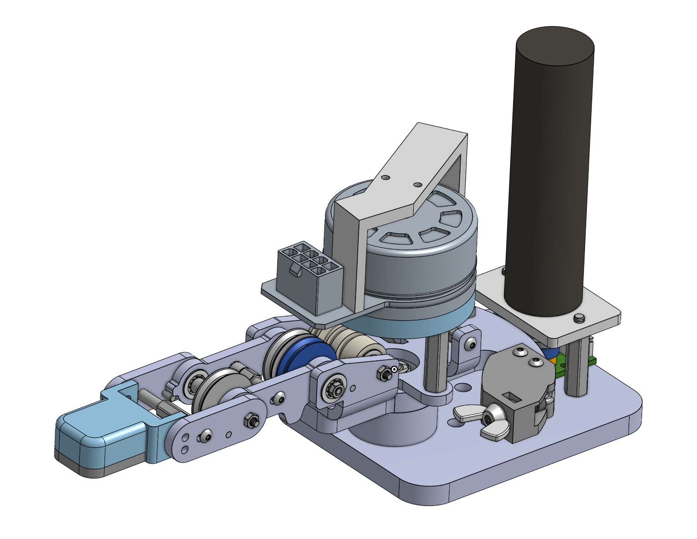
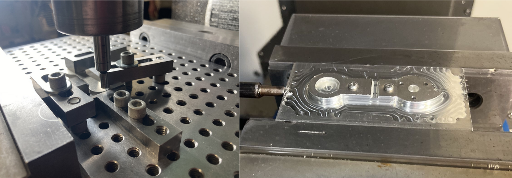

System Overview
This project is a bidirectional haptic-robot telemanipulation system comprising of four integrated mechanical subsystems:
robotic finger and thumb end-effectors with corresponding haptic interfaces. Each subsystem utilizes
two actuated degrees of freedom with cable-driven transmissions, enabling precise manipulation and
force feedback for laboratory applications requiring remote handling of hazardous materials.
Demo Video
Demonstration of the complete haptic-robot telemanipulation system showing precise control of test tube
manipulation through bidirectional force feedback and real-time position tracking.
Background
Argonne National Laboratory required a sophisticated telemanipulation system enabling chemists to safely
handle radioactive materials through remote operation. As mechanical design lead for Northwestern University's
capstone program, I spearheaded the development of integrated mechanical subsystems with stringent
precision and safety requirements.
The challenge demanded creating human-like dexterity within a constraint of two actuated degrees of freedom
per subsystem, requiring careful kinematic analysis and mechanical optimization to maximize workspace coverage
while maintaining intuitive control mapping between haptic and robotic systems.
Mechanical Design
The mechanical design focused on creating a robust, scalable system capable of handling complex assembly
operations with minimal downtime. Each component was engineered for precision, reliability, and ease of maintenance.
Robot Finger
The robot finger subsystem is engineered to closely replicate human finger curling motions, featuring
two actively actuated joints that deliver smooth, natural articulation. Rather than relying on a traditional
gear train, it uses a pulley-driven transmission with a 4:1 ratio at each joint, enhancing torque delivery
while maintaining a compact profile. High-performance Maxon EC 45 flat motors supply the requisite torque
density without adding bulk. To ensure stability under load, stainless steel cables are tensioned using
tensioning screws and nuts, and magnetic encoders provide precise positional data for fine-tuned control.
Structural components are fabricated through both water jet cutting and CNC milling for accuracy and
durability. While performance and torque efficiency meet design goals, refining linkage interfaces and
streamlining the assembly process remains an ongoing priority.

Robotic Finger CAD Model

Intelligent conveyor network with RFID tracking and dynamic routing
Haptic Finger
The haptic finger subsystem recreates human finger dynamics, offering two actively controlled joints
(MCP and PIP) plus an additional passive degree of freedom for a more natural range of motion.
Stainless steel cables, routed through machined pulleys, maintain precise motion transfer.
Cables are tensioned using vented screws and wing nuts, allowing convenient adjustments and
steady performance over time. Similar to other designs Maxon ECX Torque 22XL motors drive the system
and are mounted near the palm. The motors are placed in such a way that they do not interfere with the
mounting of the haptic thumb.

Advanced quality control station with machine vision and precision measurement
Robot Thumb
Similar to the robot finger, the robot thumb is tailored to replicate the dexterity and form factor of the
human thumb, offering two actuated degrees of freedom to produce both 'waggle' (abduction/adduction: motion
that moves the thumb away from the palm) and 'curl' (flexion/extension: curling or extending your thumb)
motions. The 'waggle' joint operates at a 7.33:1 transmission ratio, driven by Maxon ECX Torque 22XL motors
for steady, responsive motion. In contrast, the 'curl' movement uses a 7.94:1 ratio powered by Maxon EC 45
Flat motors, chosen for their compact design and strong torque-to-size ratio.
Multiple cable wraps, tensioning blocks, and CNC-machined pulleys work together to maintain tension.
High-precision machining, including turning and milling, ensures tight tolerances and secure mechanical
coupling. Similar to the finger, there are still some issues regarding tensioning which would likely be
resolved by refining the pulley system and having an easier method for tensioning.
Haptic Thumb
The haptic thumb subsystem attempts to emulate the range of motion for the human thumb with only 2
driven degrees of freedom. Similar to the robot thumb it offers 'waggle' and 'curl' motions enhanced by
an additional passive degree of freedom. Cable tension is managed via a series of idler pulleys and
vented fasteners to achieve smooth, consistent engagement. Maxon ECX motors drive the both the 'waggle'
and 'curl' motions, and a rotating fitting allows your thumb to freely swivel within the mechanism.
A flexible TPU thimble interface accommodates various thumb sizes while preserving a secure, ergonomic
fit. CNC-machined elements support a sturdy yet lightweight structure. Friction in the cable system
occasionally emerges during operation, but we believe this issue could be fixed with higher tolerance
pulleys, and a less complex way to tension the cables.

Centralized control system with real-time monitoring and predictive analytics
Workspace Validation & Mapping Analysis
Following mechanical design completion, I conducted comprehensive workspace analysis to validate alignment
between robotic and haptic subsystems for effective control mapping. This post-design validation ensured
that the reachable volumes of corresponding robotic and haptic components provided sufficient overlap
for intuitive telemanipulation control.

Post-design workspace mapping analysis comparing robotic and haptic reachable volumes
Haptic-Robot Workspace Mapping Validation
Post-design analysis validated that the robotic and haptic finger workspaces maintain consistent
planar kinematics, enabling direct position mapping between user input and robot output. The
analysis confirmed that both systems capture the essential curl motion characteristics required
for effective telemanipulation control.
For the thumb systems, workspace mapping analysis verified that the 3D robotic thumb workspace
properly corresponds to the haptic thumb interface, with the 1:1 MCP-IP joint coupling providing
natural motion mapping. The validation confirmed ~115° total curl range alignment between systems,
ensuring intuitive control for laboratory manipulation tasks.
Manufacturing Analysis & Process Optimization
Led the manufacturing strategy through multiple design iterations, transitioning from waterjet/3D printing to
precision CNC machining as part fabrication requirements became clear. Each iteration addressed specific
mechanical challenges through systematic analysis and design refinement.

Evolution from V1A waterjet prototypes through V3D final CNC-machined components
Design Iteration & Manufacturing Evolution
V1A-V2A: Transitioned from waterjet cutting to CNC machining to address tolerance
stackup issues and bearing friction problems. Initial press-fit assemblies on shoulder bolts created
excessive friction and assembly difficulties.
V3A-V3D: Implemented slip-fit bearing systems with increased clearances, resolved
bearing race support design, and scaled up finger size for improved manufacturability. Final iteration
introduced optimized tendon wrapping system to eliminate complex tensioning procedures between joints.
- Bearing Integration: Moved to flange bearings with slip fits for easier contamination management and replacement
- Tolerance Analysis: Addressed positional tolerancing issues through stackup analysis and component redesign
- Tool Selection: Optimized machining operations for small-scale precision components with custom tooling strategy
- Assembly Optimization: Redesigned cable termination points and tensioning systems for field serviceability
Technical Challenges & Engineering Solutions
Throughout development, I addressed complex mechanical challenges through systematic engineering analysis
and iterative design refinement, focusing on precision, reliability, and user safety.
Cable Tensioning Optimization
Developed adjustable tensioning system with vented screws and copper crimping techniques for consistent cable tension
Bearing Friction Mitigation
Resolved through precision bearing seat design, contamination control, and transition to slip-fit assemblies
Joint Coupling Analysis
Identified and corrected DIP-PIP coupling issues through pulley groove sizing and reference frame optimization
Safety System Integration
Implemented mechanical hard stops using press-fit dowels to prevent hyperextension and protect cable systems
Results & Impact
Successfully delivered a functional haptic-robot telemanipulation system capable of precise test tube manipulation
and bidirectional force feedback. The mechanical design achieved all primary objectives: natural motion replication,
adequate workspace coverage, and reliable force transmission through optimized cable-driven systems.
The project demonstrated advanced mechanical engineering principles including kinematic optimization, transmission
design, precision manufacturing, and system integration. The modular architecture enables future enhancements and
provides a robust foundation for Argonne National Laboratory's radioactive material handling applications, with
design insights applicable to broader telemanipulation and haptic feedback systems.